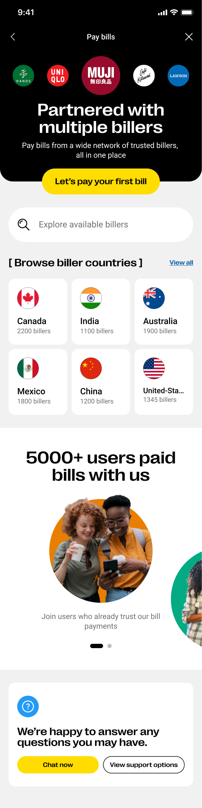
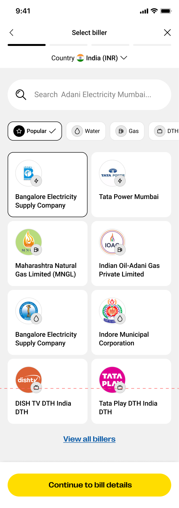
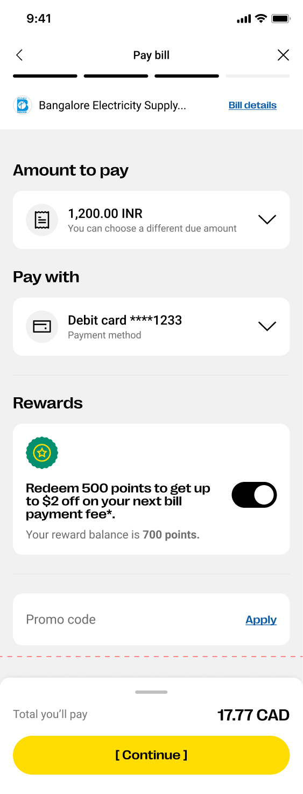
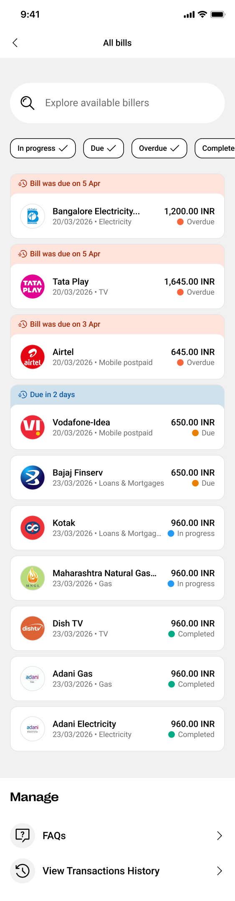

Cross-Border Bill Pay
Design Strategist & Lead · Fintech · 0→1 ProductMigrants and expats send ~30% of their remittances toward bills back home — through indirect, fragmented processes. I led the UX strategy and design for Western Union's first direct Cross-Border Bill Pay experience, replacing a legacy, low-adoption product with a modern, biller-network-backed flow — piloting in the E1 Canada app with a clear path to scale globally.
- Senders had no way to pay a bill directly — they had to trust receivers to complete payment after funds landed.
- Receivers relied on manual, cash-based, or fragmented local processes, often missing due dates.
- Neither side had visibility into whether or when a bill was actually paid — low transparency, low trust.
- A prior attempt (Quick Pay) failed to scale due to a cumbersome biller-setup process and weak UX.
Opportunity: ~$170B in addressable transaction volume globally, concentrated in corridors like US→Mexico, US→India, and UAE→Philippines.

New users land on a dedicated Bill Pay home that leads with trust signals — partnered billers and a "5000+ users paid bills with us" banner — before a single, clear call to action: pay your first bill. Bill Pay is framed as its own destination, not a byproduct of sending money.

Search, filter by category (Water, Gas, DTH), and browse popular billers by country — built to scale to thousands of billers without adding friction. A visible step tracker keeps users oriented across the multi-step flow.

The core design principle made tangible: amount due, editable payment method, reward-points redemption, and a promo code field — all visible above a single, unambiguous total before the user commits. No hidden costs, no surprises at settlement.

A single, filterable list surfaces every bill by urgency — overdue, due soon, in progress, completed — grouped with clear date context, so returning users can act on what matters most at a glance instead of hunting through history.
I reframed the problem as its own first-class journey — "pay the bill directly," not "send money and hope" — anchoring every downstream decision. To ground that vision, I ran a structured competitive teardown across global players (Wise, Xoom by PayPal, Careem Pay, Comera Pay) and Canada-specific products (PaySimply, Beacon), synthesizing what "best-in-class" bill pay requires: comprehensive biller coverage, a simple/fast/trusted experience, low cost and risk, localized payment options, simpler biller onboarding, robust reconciliation, and compliance built into the flow rather than bolted on.
From there, I defined four design principles used as the north star for engineering and compliance throughout build:
I led the wireframes and high-fidelity prototype across two core journeys — the first-time user (never paid via WU) and the returning user (has paid before) — and partnered with Product on objectives and hypotheses, partner teams on biller-catalog integration, Risk & Compliance on corridor/biller whitelisting, and Engineering on a phased delivery roadmap: Phase 1 shipped the baseline experience (homepage, search/select/fetch/pay, transaction history, tracking); Phase 2 adds advanced bill management (auto-fetch, AutoPay, and Gmail/SMS-based bill capture).